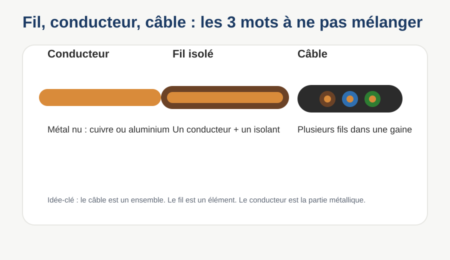
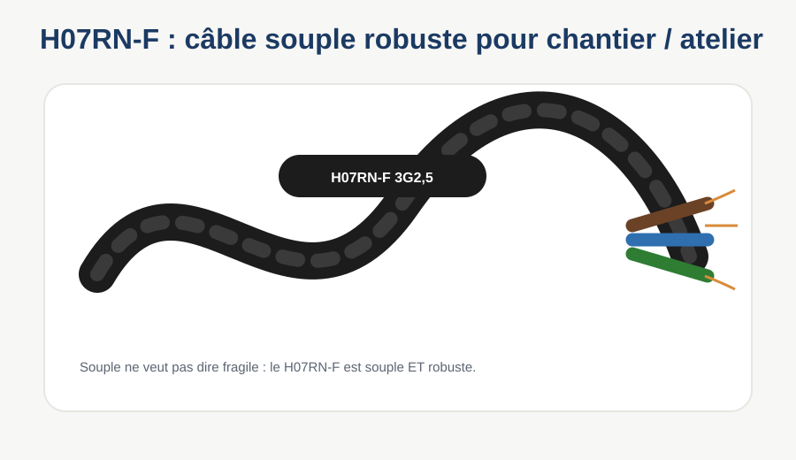
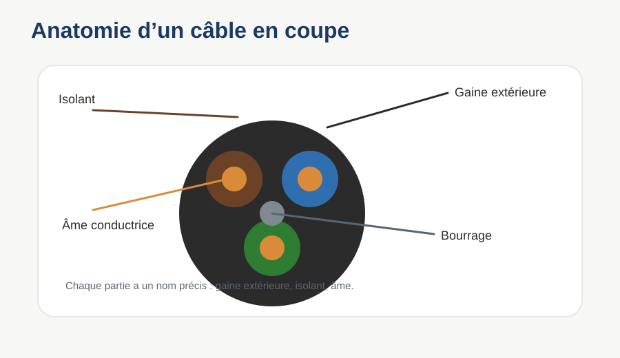
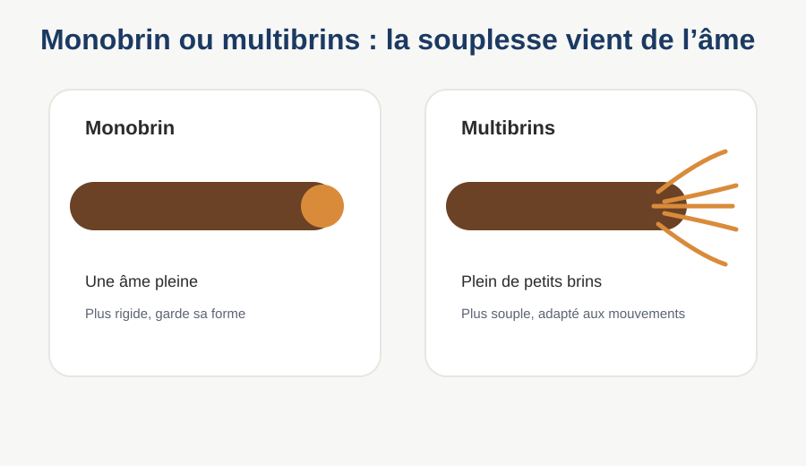

Vocabulaire, décodage, formes de câble, jeu de mémoire.
TD 1 sur 3 — durée indicative : 1h
Un câble mal choisi peut chauffer, s'user trop vite ou tomber en panne. Dans ce premier TD, tu vas apprendre à :
Sur un chantier, on confond souvent ces trois mots. Pourtant chacun désigne une chose précise :
Conducteur nu
Fil isolé
Câble (plusieurs fils réunis)

Zoom sur un seul fil : gaine (noire, extérieure) → isolant (ici marron = phase) → cuivre (l'âme, au centre, faite de petits brins torsadés).
Le H07RN-F contient une phase, un neutre et une terre sous une seule gaine caoutchouc. C'est donc…
Le cuivre nu, avant toute isolation, s'appelle…
Chaque câble porte un code écrit sur sa gaine. Ce n'est pas un nom commercial : c'est une carte d'identité normalisée.
Chaque code s'écrit dans cet ordre :
[Norme] [Tension] [Isolant] [Gaine] [-Souplesse de l'âme]
| Position | Ce que ça indique | Exemples |
|---|---|---|
| Norme | Européenne ou française | H = harmonisé (Europe) · U = norme française UTE |
| Tension | Tension maximale supportée | 05 = 300/500 V · 07 = 450/750 V · 1000 = 1000 V |
| Isolant | Matériau qui isole chaque fil | V = PVC · R = réticulé/EPR · N = néoprène |
| Âme | Souple ou rigide, cuivre ou aluminium | -F/-K = souple · -U = rigide · (rien) = cuivre · A = aluminium |
Norme NF C 32-102 / harmonisation européenne HD 22.4
Touche chaque bloc : essaie d'abord de deviner avec la table ci-dessus, puis vérifie.
Le vrai câble : gaine noire marquée H07RN-F, 3 fils qui dépassent (marron/bleu/vert-jaune) terminés par des petits brins de cuivre effilochés → ça, c'est le multibrins.
Et vu en coupe (tranche du câble) : gaine caoutchouc épaisse (noire) — 3 conducteurs (marron/bleu/vert) faits de petits brins torsadés.

Norme NF C 32-321 (système français UTE, non harmonisé)
Le vrai câble : gaine PVC grise/noire marquée U1000 R2V, 3 fils rigides — chaque bout de cuivre est plein et lisse (pas de frisottis) → ça, c'est le monobrin.
Et vu en coupe : gaine PVC — 3 conducteurs (marron/bleu/vert) avec une âme pleine. Le petit rond gris = bourrage (le « 2 » du code).
Voici un troisième câble, H05VV-F. À toi de décoder, en t'aidant du principe général. Réessaie si tu te trompes.
H →
05 →
V (isolant) →
V (gaine) →
-F →
Sur l'emballage, le code est souvent suivi d'un nombre comme 3G1,5 ou 4x2,5. Ça ne parle plus de la gaine ou de l'isolant : ça dit combien de fils il y a, et lesquels.
| Écriture | Signification |
|---|---|
| nG (ex. 3G1,5) | n fils, dont le fil de terre (codé G) |
| n x (ex. 4x2,5) | n fils, sans fil de terre |
Exemple : H07RN-F 3G1,5 = phase + neutre + terre, 1,5 mm² chacun. H05VV-F 2x0,75 = phase + neutre seulement, pas de terre, 0,75 mm² chacun.
Un câble noté 4G2,5 a-t-il un fil de terre ?
Un câble noté 2x1,5 a-t-il un fil de terre ?
Pour chaque situation, choisis le câble adapté. Une seule question compte vraiment : est-ce que ce câble va bouger ?
🔧 Une perceuse électroportative sur un chantier.
🏠 Le circuit d'éclairage d'un salon, câblé une fois pour toutes dans une cloison.
🌧️ Une pompe immergée dans un puits, exposée en permanence à l'eau.
☕ Le cordon d'alimentation d'une bouilloire de cuisine.
Le code d'un câble dit aussi sa forme. Regarde bien où la lettre apparaît :
| Écriture | Forme |
|---|---|
| Rien de particulier | Câble rond (le plus courant) |
| « H » après l'isolant | Câble plat, divisible à la main |
| « H2 » après l'isolant | Câble plat, non divisible |

Orange = gaine extérieure · blanc = isolant de chaque fil · brun = âme (conducteur). Câble rond à 3 conducteurs (ex. H07RN-F 3G en phase/neutre/terre).
Câble plat DIVISIBLE (H) : le pointillé au milieu montre où on peut le séparer à la main sur quelques centimètres. Pratique quand les 2 fils doivent rejoindre des bornes éloignées l'une de l'autre — cordon de lampe, sonnette, appareil léger.
Câble plat NON divisible (H2) : pas de pointillé — la gaine reste une seule pièce sur toute la longueur. Utile pour un câblage de signal (téléphone, sonnette murale) qui doit rester bien protégé sans risque de s'ouvrir.
Alimentation d'un pont roulant ou d'un ascenseur : le câble se plie en accordéon (des festons) à chaque passage du chariot ou de la cabine, des milliers de fois. S'il pouvait se diviser, il finirait par se déchirer à force de plier. Il doit rester une seule pièce solide → toujours du non-divisible ici.

H05VVH2-F : quelle forme ?
Le câble d'alimentation d'un pont roulant, qui se plie sans arrêt en accordéon, doit être…
Clique deux cartes. Si le code et sa signification correspondent, la paire reste affichée.
7 questions pour vérifier ce qui est acquis dans ce TD1.
TD 1/3